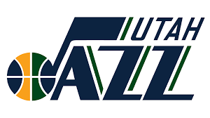

Utah Jazz (Jazz de Utah) es un equipo de la NBA de la ciudad de Salt Lake City, Utah. El equipo no es originario de Utah, sino que fue transferido desde Nueva Orleans, de ahí el nombre del género musical.
Para la 1996-97, los Jazz obtuvieron un récord de temporada en su global, finalizando con un 64-18 y primeros de la Conferencia Oeste. El equipo demostraba ser muy sólido y muy bien compenetrado con jugadores como Jeff Hornacek, Antoine Carr, Howard Eisley o Bryon Russell, capitaneados por el legendario dúo de John Stockton y Karl Malone y entrenados por Jerry Sloan. El propio Malone ganó el MVP al promediar 27,4 puntos, 9,9 rebotes y 4,5 asistencias.
En 1974, los Jazz nacían en la ciudad de Nueva Orleans siendo el decimoctavo equipo de la NBA. El primer jugador franquicia de los Jazz sería el vistoso base Pete Maravich que obtuvieron desde Atlanta Hawks por dos primeras y tres segundas de draft. Los Jazz destacaron por ser un equipo de juego alegre y frenético, dirigidos por el propio Maravich y otros importantes jugadores como Lou Hudson o Walt Hazzard. Pese a todo, el rendimiento del equipo nunca fue satisfactorio, sus mejores resultados fueron en la temporada 1977-78 donde finalizaron con un global de 39-43.
 Indice
Indice